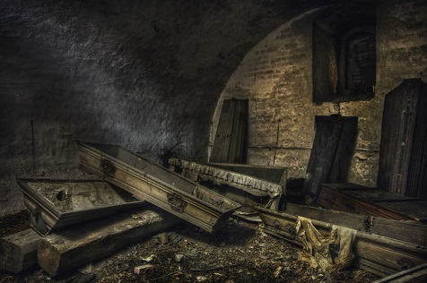

La desdicha más manifiesta cede finalmente ante el incansable coraje de un espíritu filosófico, así como la ciudad más inexpugnable ante la incesante vigilancia de su enemigo. Salmanasar, como nos lo enseñan las Escrituras, sitió Samaria durante tres años, pero ésta cayó al fin. Sardanápalo —consúltese a Diodoro— se defendió en Nínive durante siete años, pero no le sirvió de nada. Troya cayó al terminar el segundo lustro, y Azoth, según lo afirma Aristeo por su honor de caballero, abrió, por fin, sus puertas a Psamético, después de haberlas tenido cerradas durante la quinta parte de un siglo... —¡Miserable! ¡Zorra! ¡Arpía! —dije a mi mujer a la mañana siguiente de nuestras bodas—. ¡Bruja... carne de látigo... pozo de iniquidad... horrible quintaesencia de todo lo abominable... tú... tú...! Y en puntas de pie, mientras la aferraba por la garganta y acercaba mi boca a su oreja, disponíame a botar un nuevo y más enérgico epíteto de oprobio, que de ser dicho no dejaría de convencerla de su insignificancia, cuando, para mi extremo horror y estupefacción, descubrí que había perdido el aliento. Las frases: «Me falta el aliento», o «He perdido el aliento», se repiten con frecuencia en la conversación; pero jamás se me había ocurrido que el terrible accidente de que hablo pudiera ocurrir bona fide y de verdad. ¡Imaginaos, si tenéis fantasía suficiente, imaginaos mi maravilla, mi consternación, mi desesperación! Tengo un genio protector, empero, que jamás me ha abandonado por completo. En mis accesos más incontrolables conservo siempre el sentido de la propiedad, et le chemin des passions me conduit —como dice Lord Edouard en Julie— à la philosophie véritable. Aunque en el primer momento no pude verificar hasta qué punto me afectaba lo sucedido, decidí de todos modos ocultarlo a mi mujer hasta que nuevas experiencias me mostraran la amplitud de tan inaudita calamidad. Cambié de inmediato la expresión de mi rostro, haciéndolo pasar de su apariencia hinchada y retorcida a un aire de traviesa y coqueta bondad, y di a mi dama un golpecito en una mejilla y un beso en la otra, todo esto sin articular una sílaba (¡Furias! ¡Me era imposible!), dejándola estupefacta de mi extravagancia, tras lo cual salí de la habitación pirueteando y haciendo un pas de zéphyr. Contempladme ahora, encerrado en mi boudoir privado, terrible ejemplo de las tristes consecuencias que se derivan de la irascibilidad; vivo, pero con todas las características de la muerte; muerto, con todas las propensiones de los vivos; una verdadera anomalía sobre la tierra; perfectamente tranquilo y, no obstante, sin aliento. ¡Sí, sin aliento! No bromeo al afirmar que mi aliento había desaparecido. No hubiera sido capaz de mover una pluma con él, aunque de ello dependiera mi vida, y menos aún empañar la transparencia de un espejo. ¡Crueles hados! Poco a poco, sin embargo, hallé algún alivio a ese primer incontenible paroxismo de angustia. Luego de algunas pruebas descubrí que la facultad vocal que, dada mi incapacidad para proseguir la conversación con mi esposa, había considerado como totalmente perdida, sólo se hallaba parcialmente afectada; noté también que, si en aquella interesante crisis hubiera bajado mi voz a un tono profundamente gutural, habría podido continuar comunicándole mis sentimientos; en efecto, este tono de voz (el gutural) no depende de la corriente de aire del aliento, sino de cierta acción espasmódica de los músculos de la garganta. Dejándome caer en una silla, permanecí algún tiempo sumido en meditación. Ni que decir que mis reflexiones distaban de ser consoladoras. Mil vagas y lacrimosas fantasías se posesionaban de mi alma, y la idea del suicidio llegó a cruzar por mi mente. Pero la perversidad de la naturaleza humana se caracteriza por rechazar lo obvio y lo fácil, prefiriendo lo distante y lo equívoco. Me estremecía, pues, al pensar en el suicidio como en la más terrible de las atrocidades, mientras mi gato ronroneaba con todas sus fuerzas sobre la alfombra, y el perro de aguas suspiraba fatigosamente bajo la mesa, jactándose ambos de la fuerza de sus pulmones y burlándose con toda evidencia de mi incapacidad respiratoria. Oprimido por un mar de vagos temores y esperanzas oí finalmente los pasos de mi mujer que bajaba la escalera. Seguro de su ausencia, volví con el corazón palpitante a la escena de mi desastre. Cerrando cuidadosamente la puerta, inicié una minuciosa búsqueda. Era posible que el objeto de mis afanes estuviera escondido en algún sombrío rincón, o agazapado en algún armario o cajón. Podía tener quizá una forma tangible o vaporosa. La mayoría de los filósofos son muy poco filosóficos sobre diversos puntos de la filosofía. Empero, en su Mandeville, William Godwin sostiene que «las cosas invisibles son las únicas realidades», y se admitirá que esto merece tenerse en cuenta. Me agradaría que el lector sensato reflexionara antes de pensar que tales aseveraciones exceden lo absurdo. Se recordará que Anaxágoras sostenía que la nieve era negra, y desde este episodio estoy convencido de que tenía razón. Larga y cuidadosamente seguí buscando, pero la despreciable recompensa de tanta industria y perseverancia resultó ser tan sólo una dentadura postiza, un par de caderillas, un ojo y cantidad de billets-doux dirigidos por Mr. Alientolargo a mi esposa. Aprovecho para hacer notar que esta confirmación de la parcialidad de mi esposa hacia Mr. Alientolargo me preocupaba muy poco. El hecho de que Mrs. Faltaliento admirara a alguien tan distinto de mí era un mal tan natural como necesario. Bien sabido es que poseo una apariencia corpulenta y robusta, pero que mi estatura está por debajo de la normal. No hay que maravillarse, pues, de que la delgadez como de palo de mi conocido, y su estatura, que se ha vuelto proverbial, mereciera la más natural de las admiraciones por parte de Mrs. Faltaliento. Pero volvamos a nuestro tema. Como he dicho, mis esfuerzos resultaron inútiles. Vanamente revisé armario tras armario, cajón tras cajón, hueco tras hueco. Hubo un momento en que me sentí casi seguro de mi presa, cuando al revolver en una caja de tocador volqué accidentalmente una botella de aceite de Arcángeles de Grandjean —que, como perfume agradable, me tomo la libertad de recomendar. Con el corazón lleno de pena me volví a mi boudoir a fin de discurrir algún método que burlara la astucia de mi esposa; necesitaba ganar tiempo para completar mis preparativos de viaje, pues estaba dispuesto a abandonar el país. En una nación extranjera, desconocido, tenía algunas probabilidades de ocultar mi desdichada calamidad —calamidad aún más propia que la miseria para privarme de la estimación general y provocar con mi miserable persona la bien merecida indignación de los virtuosos y los felices—. No vacilé mucho tiempo. Como estaba dotado de una natural aptitud, me aprendí íntegramente de memoria la tragedia de Metamora103. Había recordado felizmente que en este drama, o por lo menos en las partes correspondientes a su héroe, los tonos de voz que había perdido eran completamente innecesarios, pues todo el recitado debía hacerse con una profunda voz gutural. Practiqué algún tiempo mi texto en los bordes de un concurrido pantano, aunque sin acudir a procedimientos similares a los de Demóstenes, sino a un método absoluta y especialmente mío. Así eficazmente armado decidí hacer creer a mi esposa que me había apasionado súbitamente por el teatro. Tuve un éxito que puede considerarse milagroso; a cada pregunta o sugestión que me hacía le contestaba (con una voz sepulcral y en un todo semejante al croar de una rana) declamando algún pasaje de la tragedia; por lo demás, no tardé en observar con grandísimo placer que dichos pasajes se aplicaban igualmente bien a cualquier tema. No debe suponerse, además, que al proceder al recitado de dichos pasajes dejaba yo de mirar de través, exhibir mis dientes, entrechocar las rodillas, patear el piso, o hacer cualquiera de esas innominables gracias que constituyen justamente las características de un trágico popular. Ni que decir tiene que todo el mundo hablaba de ponerme una camisa de fuerza; pero, ¡gracias a Dios!, jamás sospecharon que había perdido el aliento. Puestos por fin en orden mis asuntos, ocupé una mañana temprano mi asiento en la diligencia de N..., dando a entender a mis relaciones que en aquella ciudad me aguardaban asuntos de máxima importancia. La diligencia estaba atestada de pasajeros, pero a la débil luz del amanecer no podía distinguir los rasgos de mis compañeros. Sin hacer mayor resistencia me dejé ubicar entre dos caballeros de colosales dimensiones, mientras un tercero, aún más grande, pedía disculpas por la libertad que iba a tomarse y se instalaba sobre mí cuan largo era, quedándose dormido en un instante ahogando mis guturales clamores de socorro con unos ronquidos que hubieran hecho sonrojar a los bramidos del toro de Falaris. Felizmente el estado de mis facultades respiratorias eliminaba todo riesgo de sofocación. Cuando fue día claro y nos acercábamos a los suburbios de la ciudad, mi atormentador se levantó y, mientras se ajustaba el cuello, me dio cortésmente las gracias por mi gentileza. Viendo que yo permanecía inmóvil (pues tenía todos los miembros dislocados y la cabeza torcida hacia un lado), se sintió un tanto preocupado; despertando al resto de los pasajeros, les dijo de manera muy decidida que, en su opinión, durante la noche les habían endilgado un cadáver pretendiendo que se trataba de otro pasajero, y me hundió un dedo en el ojo derecho como demostración de lo que estaba sosteniendo. En vista de ello, el resto de los pasajeros (que eran nueve) consideraron su deber tirarme sucesivamente de las orejas. Un mediquillo joven me aplicó un espejo a los labios y, al descubrir que me faltaba el aliento, declaró que las afirmaciones de mi atormentador eran rigurosamente ciertas; por lo cual los viajeros manifestaron que no estaban dispuestos a tolerar mansamente semejantes imposiciones en el futuro, y que, en cuanto al presente, no seguirían en compañía de un cadáver. Dicho esto, y mientras pasábamos delante de la taberna del Cuervo, me arrojaron de la diligencia sin sufrir otro accidente que la ruptura de ambos brazos aplastados por la rueda trasera izquierda del vehículo. Diré, además, en homenaje al cochero, que no dejó de tirarme también el más pesado de mis baúles, que desdichadamente me cayó en la cabeza, fracturándomela de manera tan interesante cuanto extraordinaria. El posadero del Cuervo, que era hombre hospitalario, descubrió que mi baúl contenía lo suficiente para indemnizarlo de cualquier pequeño trabajo que se tomara por mí, y, luego de mandar llamar a un médico conocido, me confió a su cuidado conjuntamente con una cuenta y recibo por diez dólares. El comprador me llevó a su casa y se puso a trabajar inmediatamente sobre mi persona. Comenzó por cortarme las orejas; pero al hacerlo descubrió ciertos signos de vida. Mandó entonces llamar a un farmacéutico vecino, para consultarlo en la emergencia. Pero en el ínterin, y por si sus sospechas sobre mi existencia resultaban exactas, me hizo una incisión en el estómago y me extrajo varias visceras para disecarlas privadamente. El farmacéutico tendía a creer que yo estaba muerto. Traté de refutar su idea pateando y saltando con todas mis fuerzas, mientras me contorsionaba furiosamente, ya que las operaciones del cirujano me habían devuelto los sentidos. Pero ello fue atribuido a los efectos de una nueva batería galvánica con la cual el farmacéutico, que era hombre informado, efectuó diversos experimentos que no pudieron dejar de interesarme, dada la participación personal que tenía en ellos. Lo que más me mortificaba, sin embargo, era que todos mis intentos por entablar conversación fracasaban, al punto de que ni siquiera conseguía abrir la boca; imposible contestar, pues, a ciertas ingeniosas pero fantásticas teorías que, bajo otras circunstancias, mis detallados conocimientos de la patología hipocrática me habrían permitido refutar fácilmente. Dado que le era imposible llegar a una conclusión, el cirujano decidió dejarme en paz hasta un nuevo examen. Fui llevado a una buhardilla, y luego que la esposa del médico me hubo vestido con calzoncillos y calcetines, su marido me ató las manos y me sujetó las mandíbulas con un pañuelo, cerrando la puerta por fuera antes de irse a cenar, y dejándome entregado al silencio y a la meditación. Descubrí entonces con inmenso deleite que, de no haber tenido atada la boca con el pañuelo, hubiese podido hablar. Consolándome con esta reflexión, me puse a repetir mentalmente algunos pasajes de la Omnipresencia de la Divinidad, como era mi costumbre antes de entregarme al sueño; pero en ese momento dos gatos de voraz y vituperable aspecto entraron por un agujero de la pared, saltaron con una pirueta à la Catalani y cayeron uno frente a otro sobre mi cara, entregándose a una indecorosa contienda por la fútil posesión de mi nariz. Así como la pérdida de sus orejas sirvió para elevar al trono a Ciro, el Mago de Persia, y la mutilación de su nariz dio a Zopiro la posesión de Babilonia, así la pérdida de unas pocas onzas de mi cara sirvió para la salvación de mi cuerpo. Exasperado por el dolor y ardiendo de indignación, hice saltar de golpe las cuerdas y el vendaje. Corrí por la habitación, lanzando una mirada de desprecio a los beligerantes, y, luego de abrir la ventana ante su horror y desencanto, me precipité por ella con gran destreza. El ladrón de caminos W., al cual me parecía muchísimo, era llevado en ese momento desde la ciudad al cadalso erigido en los suburbios para su ejecución. Su extremada debilidad y el largo tiempo que llevaba enfermo le habían valido el privilegio de que no lo ataran; vestido con las ropas de los condenados a muerte —que se parecían mucho a las mías— yacía tendido en el fondo del carro del verdugo (carro que pasaba justamente bajo las ventanas del cirujano en momentos en que yo salía por la ventana), sin otra custodia que el carrero, que iba dormido, y dos reclutas del 6 de infantería, que estaban borrachos. Para mi mala suerte, caí de pie en el vehículo. W., que era hombre astuto, percibió al instante su oportunidad. Dando un salto se dejó caer del carro y, metiéndose por una calleja, se perdió de vista en un guiñar de ojos. Sobresaltados por el ruido, los reclutas no pudieron darse cuenta del cambio producido. Pero al ver a un hombre semejante en todo al villano, que se erguía en el carro frente a ellos, supusieron que el miserable (es decir W.) trataba de escapar, y, luego de comunicarse el uno al otro esta opinión, bebieron sendos tragos y me derribaron a culatazos con los mosquetes. No tardamos mucho en llegar a nuestro destino. Por supuesto, nada podía yo decir en mi defensa. Era inevitable que me ahorcaran. Me resigné, con un estado de ánimo entre estúpido y sarcástico. Había en mí muy poco de cínico, pero tenía todos los sentimientos de un perro. Entretanto el verdugo me ajustaba el dogal al cuello. La trampa cayó. Me abstengo de describir mis sensaciones en el patíbulo, aunque indudablemente podría hablar con conocimiento de causa, y se trata de un tema sobre el cual no se ha dicho aún nada correcto. La verdad es que para escribir al respecto conviene haber sido ahorcado previamente. Todo autor debería limitarse a las cuestiones que conoce por experiencia. Así, Marco Antonio compuso un tratado sobre la borrachera. Mencionaré, empero, que no perecí. Mi cuerpo estaba suspendido, pero aquello no podía suspender mi aliento; de no haber sido por el nudo debajo de la oreja izquierda (que me daba la impresión de un corbatín militar), me atrevería a afirmar que no sentía mayores molestias. En cuanto a la sacudida que recibió mi cuello al caer desde la trampa, sirvió meramente para enderezarme la cabeza que me ladeara el gordo caballero de la diligencia. Tenía buenas razones, empero, para compensar lo mejor posible las molestias que se había tomado la muchedumbre presente. Mis convulsiones, según opinión general, fueron extraordinarias. Imposible hubiera sido sobrepasar mis espasmos. El populacho pedía bis. Varios caballeros se desmayaron y multitud de damas fueron llevadas a sus casas con ataques de nervios. Pinxit aprovechó la oportunidad para retocar, basándose en un croquis tomado en ese momento, su admirable pintura de Marsias desollado vivo. Cuando hube proporcionado diversión suficiente, se consideró llegado el momento de descolgar mi cuerpo del patíbulo —sobre todo porque, entretanto, el verdadero culpable había sido descubierto y capturado, hecho del que por desgracia no llegué a enterarme. Como es natural lo ocurrido me valió simpatías generales, y como nadie reclamó mi cadáver se ordenó que fuera enterrado en una bóveda pública. Allí, después de un plazo conveniente, fui depositado. Marchóse el sepulturero y me quedé solo. En aquel momento un verso del Malcontento de Marston, La muerte es un buen muchacho, y tiene casa abierta... me pareció una palpable mentira. Arranqué, sin embargo, la tapa de mi ataúd y salí de él. El lugar estaba espantosamente húmedo y era muy lóbrego, al punto que me sentí asaltado por el ennui. Para divertirme, me abrí paso entre los numerosos ataúdes allí colocados. Los bajé al suelo uno por uno y, arrancándoles la tapa, me perdí en meditaciones sobre la mortalidad que encerraban. —Éste —monologué, tropezando con un cadáver hinchado y abotagado— ha sido sin duda un infeliz, un hombre desdichado en toda la extensión de la palabra. Le tocó en vida la terrible suerte de anadear en vez de caminar, de abrirse camino como un elefante y no como un ser humano, como un rinoceronte y no como un hombre. Sus tentativas para avanzar resultaban inútiles y sus movimientos giratorios terminaban en rotundos fracasos. Al dar un paso adelante, su desgracia consistía en dar dos a la derecha y tres a la izquierda. Sus estudios se vieron limitados a la poesía de Crabbe. No tuvo idea de la maravilla de una pirouette. Para él, un pas de papillon era sólo una concepción abstracta. Jamás ascendió a lo alto de una colina. Nunca, desde un campanario, contempló el esplendor de una metrópolis. El calor era su mortal enemigo. Durante la canícula sus días eran días de can. Soñaba con llamas y sofocaciones, con una montaña sobre otra, el Pelión sobre el Osa. Le faltaba el aliento, para decirlo en una palabra; sí, le faltaba el aliento. Consideraba una extravagancia tocar instrumentos de viento. Fue el inventor de los abanicos automáticos, de las mangueras de viento, de los ventiladores. Protegió a Du Pont, el fabricante de fuelles, y murió miserablemente mientras intentaba fumar un cigarro. Siento profundo interés por su caso, pues simpatizo sinceramente con su suerte. —Pero aquí —dije, extrayendo desdeñosamente de su receptáculo un cuerpo alto, flaco y extraño, cuya notable apariencia me produjo una sensación de desagradable familiaridad—, aquí hay un miserable indigno de conmiseración en esta tierra. Y diciendo así, para lograr una mejor vista de mi sujeto, lo agarré por la nariz con el pulgar y el índice, obligándolo a sentarse en el suelo, y lo mantuve en esta forma mientras continuaba mi monólogo. —Indigno —repetí— de conmiseración en esta tierra. ¿A quién se le ocurriría compadecer a una sombra? Por lo demás, ¿no ha tenido el pleno goce de las dichas propias de los mortales? Fue el creador de los monumentos elevados, de las altas torres donde se fabrica la metralla, de los pararrayos, de los álamos de Lombardía. Su tratado sobre Sombras y penumbras lo inmortalizó. Fue distinguido y hábil editor de la obra de South sobre «los huesos». A temprana edad concurrió al colegio y estudió la ciencia neumática. De vuelta a casa, no hacía más que hablar y tocar el corno francés. Protegió las gaitas. El capitán Barclay, que andaba en contra del tiempo, no pudo andar contra él. Sus escritores favoritos eran Windham y Allbreath, y Phiz su artista preferido. Murió gloriosamente, mientras inhalaba gas; levique flatu corrupitur, como la fama pudicitiœ en San Jerónimo. Era indudablemente un... —¿Cómo se atreve... cómo... se... atreve...? —interrumpió el objeto de mi animadversión, jadeando por respirar y arrancándose con un desesperado esfuerzo el vendaje de la mandíbula—. ¿Cómo puede usted Mr. Faltaliento, ser tan infernalmente cruel para sujetarme de esa manera por la nariz? ¿No ve que me han atado la boca? ¡Debería darse cuenta, si es que se da cuenta de algo, que debo exhalar un enorme exceso de aliento! Pero, si no lo sabe, siéntese y lo verá. En mi situación representa un grandísimo alivio poder abrir la boca, explayarse, hablar con una persona como usted que no es de los que se creen llamados a interrumpir a cada momento el hilo del discurso de su interlocutor. Las interrupciones son molestas y deberían abolirse. ¿No lo cree usted? ¡Oh, no conteste, por favor! Basta con que uno solo hable a la vez. Pronto habré terminado, y entonces podrá empezar usted. ¿Cómo demonios llegó a este lugar, señor? ¡Ni una palabra, le ruego! Llevo aquí algún tiempo... ¡Terrible accidente! ¿Supo usted de él, presumo? ¡Espantosa calamidad! Mientras pasaba bajo sus ventanas... hace un tiempo... justamente en la época en que a usted le dio por el teatro... ¡cosa horrible! ... ¿Oyó alguna vez la expresión «retener el aliento»? ¡Cállese, le digo! ¡Pues bien... yo retuve el aliento de otra persona! Y eso que siempre había tenido bastante con el mío propio... Al ocurrirme eso me encontré con Blab en la esquina... pero no me dio la menor posibilidad de decir una palabra... imposible deslizar una sola sílaba... Naturalmente, fui víctima de un ataque epiléptico... Blab salió huyendo... ¡Los muy estúpidos! Creyeron que había muerto y me metieron aquí... ¡Vaya hato de imbéciles! En cuanto a usted, he oído todo lo que ha dicho... y cada palabra es una mentira... ¡Horrible, espantoso, ultrajante, atroz, incomprensible...! Etcétera, etcétera, etcétera... Imposible concebir mi estupefacción ante tan inesperado discurso, y la alegría que sentí poco a poco al irme convenciendo de que el aliento tan afortunadamente capturado por aquel caballero (que no era otro que mi vecino Alientolargo) era precisamente el que yo había perdido durante mi conversación con mi mujer. El tiempo, el lugar y las circunstancias lo confirmaban sin lugar a dudas. Pero de todas maneras no solté mi mano de la nariz de Mr. Alientolargo, por lo menos durante el largo período durante el cual el inventor de los álamos de Lombardía siguió favoreciéndome con sus explicaciones. Obraba en este sentido con la habitual prudencia que siempre constituyó mi rasgo dominante. Reflexioné que grandes obstáculos se amontonaban en el camino de mi salvación, y que sólo con grandísimas dificultades podría superarlos. Muchas personas, bien lo sabía, estiman las cosas que poseen —por más insignificantes que sean para ellas, y aun molestas o incómodas— en razón directa de las ventajas que obtendrían otras personas si las consiguieran. ¿No sería éste el caso con Mister Alientolargo? Si me mostraba ansioso por ese aliento que tan dispuesto se mostraba a abandonar, ¿no me convertiría en una víctima de las extorsiones de su avaricia? Hay villanos en este mundo, como le recordé mientras suspiraba, que no tendrán escrúpulos en aprovecharse del vecino de al lado; y además (esta observación proviene de Epicteto), en el momento en que los hombres están más deseosos de arrojar la carga de sus calamidades, es cuando menos dispuestos se muestran a ayudar en el mismo sentido a sus semejantes. Frente a consideraciones de este género, manteniendo siempre mi presa por la punta de la nariz, consideré oportuno dirigirle la siguiente réplica: —¡Monstruo! —Empecé, con un tono de profunda indignación—. ¡Monstruo e idiota de doble aliento! Tú, a quien los cielos han castigado por tus iniquidades dándote una doble respiración, ¿te atreves a dirigirte a mí con el lenguaje familiar de la amistad? «¡Mentiras!», dices y «que me calle la boca», ¡naturalmente! ¡Vaya conversación con un caballero que sólo tiene un aliento! ¡Y todo esto cuando de mí depende aliviarte de la calamidad que sufres, y eliminar todas las superfluidades de tu malhadada respiración! Al igual que Bruto, me detuve esperando una respuesta, que, semejante a un huracán, me arrolló inmediatamente. Mr. Alientolargo presentó toda clase de protestas y excusas. No había una sola cosa con la cual no se mostrara perfectamente de acuerdo, y no dejé de sacar ventaja de cada una de sus concesiones. Arreglados los detalles preliminares, mi interlocutor procedió a devolverme mi respiración; luego de examinarla cuidadosamente, le entregué un recibo. Comprendo que muchos me harán reproches por referirme tan brevemente a un negocio de tanta importancia. Se dirá que bien podía haber proporcionado minuciosos detalles de la operación gracias a la cual (y es muy cierto) podría arrojar nuevas luces sobre una interesantísima rama de las ciencias naturales. Lamento mucho no poder responder a esto. Sólo me está permitido hacer una vaga alusión. Había circunstancias —pero después de pensarlo bien, me parece más seguro decir lo menos posible sobre tan delicado asunto—, circunstancias muy delicadas, repito, que al mismo tiempo involucran a una tercera persona cuyo resentimiento no tengo el menor interés en padecer en este momento. No tardamos mucho, después de aquella transacción, en escaparnos de las mazmorras del sepulcro. Las fuerzas unidas de nuestras resucitadas voces fueron muy pronto oídas desde afuera. Tijeras, el director de un periódico centralista, aprovechó para publicar de nuevo su tratado sobre «la naturaleza y origen de los sonidos subterráneos». Una réplicarefutación-respuesta-justificación no tardó en aparecer en las columnas de un diario democrático. Abriéronse las puertas de la bóveda para liquidar la controversia, y la aparición de Mr. Alientolargo y mía probó a ambas partes que estaban igualmente equivocadas. No puedo determinar estos detalles sobre algunos pasajes singulares de una vida bastante memorable, sin llamar otra vez la atención del lector acerca de los méritos de esa filosofía sin distinciones que sirve de seguro escudo contra los dardos de la calamidad que no alcanzan a verse, sentirse ni comprenderse. Está en el espíritu de esta sabiduría la creencia, entre los antiguos hebreos, de que las puertas del cielo se abrirían inevitablemente para aquel pecador o santo que, con buenos pulmones y lleno de confianza, vociferaba la palabra «¡Amén!». Y se halla también dentro del espíritu de esa sabiduría el que, durante la gran plaga que asolaba Atenas, y luego que se agotaron todos los medios para alejarla, Epiménides —como relata Laercio en su segundo libro sobre el filósofo— aconsejara la erección de un santuario y un templo «al Dios apropiado».
 Se puede observar que el narrador en este relato de Poe es un narrador-personaje en primera persona. En esta situación se sabe lo que el personaje está sintiendo y pensando, dado que, el mismo personaje es el que está contando la historia. Al contar su historia, la serie de acontecimientos que le ocurrieron, y como cuenta sus acontecimientos se puede decir también que es protagonista porque es un personaje que comunica a la acción su primer impulso dinámico. Vemos que él reacciona ante la infidelidad de su mujer, planea su “huida” a otra ciudad, y es ahí donde ocurre la trama de la historia.
El relato nos muestra una visión muy conocida de Edgar Allan Poe, lo obscuro, lo macabro, el miedo y el terror psicológico de sus personajes, la pluma gótica que mancha sus páginas de surrealismo y símbolos que a veces no podemos entender. El “aliento” para este relato no sabemos con exactitud qué quiere decir, pero sabemos que es más profundo que el simple aliento, nos da a entender que es algo vital y que cuando se queda sin él, es como una muerte en vida, y aquel que roba un “aliento” sufre de la misma manera al tener dos o más, ya que no existe capacidad para mantener ambos o se requiere un gran esfuerzo, podría entenderse como algo metafórico.
By Ale Rocha